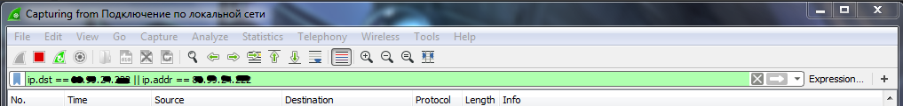

Wireshark тестирвоание трафика
Фильтр: ip.dst == 08.09.04.002 || ip.addr == 08.09.04.002
слушай интерфейс сетевухи через этот фильтр, получишь пакеты игры, только отключись еще от rdp если подключен
Можешь сразу вот так, чтобы у тебя и в списке этих мелких пакетов не было
(ip.dst == 08.09.04.002 || ip.addr == 08.09.04.002) && udp.length >= 100

Created with the Personal Edition of HelpNDoc: Free help authoring tool